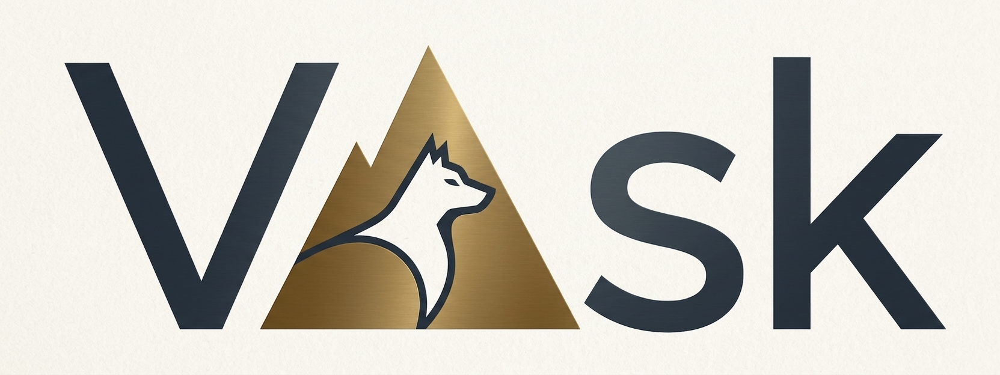

Eksperckie wsparcie w świecie technologii i procesów biznesowych
Identyfikacja potrzeb, definiowanie wymagań i optymalizacja rozwiązań dostosowanych do Twojego biznesu.
Profesjonalne wsparcie merytoryczne na każdym etapie cyklu życia projektu informatycznego.
Przygotowanie dokumentacji, analiza ofert i pomoc w wyborze optymalnych dostawców technologii.
Wizualizacja i optymalizacja obiegu informacji oraz procesów wewnątrz Twojej organizacji.
Nadzór nad realizacją, zarządzanie ryzykiem i dbałość o dotrzymanie terminów oraz budżetów.
Opracowanie długofalowych planów rozwoju technologicznego wspierających cele Twojej firmy.